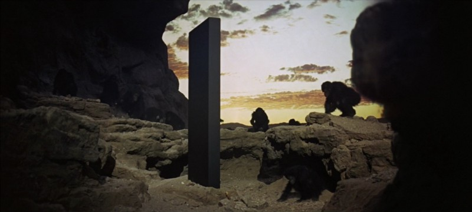
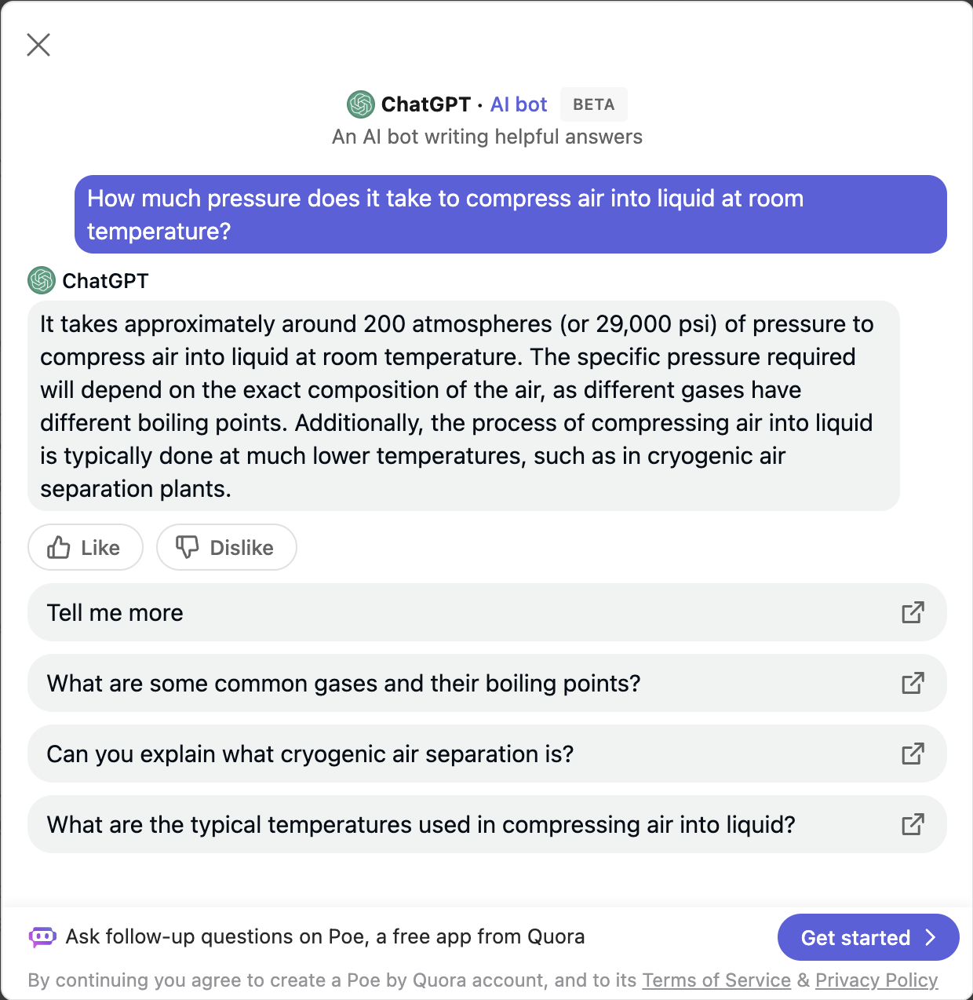

I wanted to return to this particular side-track because of all the hype and teeth-gnashing that AI is attracting these days and to connect earlier installments with the central theme. Nowadays, it feels as if the AI-based dystopia of Arthur C. Clarke’s (and Stanley Kubrick’s) 2001: A Space Odyssey1 is guiding the dialog rather than actual progress. It’s worth re-reading and re-watching these classic works in a modern context! To recap, the central character, HAL 9000, is an advanced AI that represents itself as a human (like ChatGPT) but develops human feelings of guilt and mortality that lead to its undoing. The classic opening refers back to the Dawn of Man (where an alien monolith teaches apes to use tools but the tribe ends up inventing warfare):

In an earlier installment, I pointed out that OpenAI’s Chat Generative Pretrained Transformer (ChatGPT) is human-like because it avoids self-criticism and tends to make stuff up (i.e., bullshits) instead of simply saying “I don’t know.” As with human interactions, relying on facts from verbally agile bullshit artists gets you into deep trouble. Know your sources!
Baked-in dishonesty is a severe drawback to the AI/ML “revolution”. Look no further than Mata v. Avianca (2023)! From the New York Times:
The case involved a man named Roberto Mata, who had sued the airline Avianca claiming he was injured when a metal serving cart struck his knee during an August 2019 flight from El Salvador to New York.
Avianca asked Judge Castel to dismiss the lawsuit because the statute of limitations had expired. Mr. Mata’s lawyers responded with a 10-page brief citing more than half a dozen court decisions, with names like Martinez v. Delta Air Lines, Zicherman v. Korean Air Lines and Varghese v. China Southern Airlines, in support of their argument that the suit should be allowed to proceed.
After Avianca’s lawyers could not locate the cases, Judge Castel ordered Mr. Mata’s lawyers to provide copies. They submitted a compendium of decisions.
It turned out the cases were not real.
Mr. Schwartz [one of Mr. Mata’s attorneys], who has practiced law in New York for 30 years, said in a declaration filed with the judge this week that he had learned about ChatGPT from his college-aged children and from articles, but that he had never used it professionally.
…
Irina Raicu, who directs the internet ethics program at Santa Clara University, said this week that the Avianca case clearly showed what critics of such models have been saying, “which is that the vast majority of people who are playing with them and using them don’t really understand what they are and how they work, and in particular what their limitations are.”
This is not a minor flaw: ChatGPT invented not just one but eight fictitious legal cases to claim legal precedents in an actual lawsuit! Not only did it fabricate the cases without HAL9000’s ethical uneasiness, but it also supported its lies with multi-page descriptions of the precedents in stylistically dense legalese. As with much of today’s “tech” world, the dilemma reduces to the tech bro’s assertion, “It’s not a bug. It’s a feature!” And, even if you ask ChatGPT where it gets its information, it cannot tell you because it does not know its own sources!
This is a brief aside from my simple understanding of the generative AI “algorithm”, which mostly comes from Bea Stollnitz’s blog entry. When asked a question, the algorithm separates the question into a series of words and uses this series (and a lot of computer power) to predict what the next word is most likely to be. With this new word, the process repeats itself until there is no “next word”. The method of pretraining the algorithm involves gauging a human’s reaction to the answer (as in “Is this answer real or fake?”). This iterative process “teaches” the algorithm which “next word” is most acceptable to humans, like how Netflix or YouTube suggests the next thing to watch based on your history. So, the reason ChatGPT bullshits well is that’s all it does! The remarkable observation is that it gets things right!
So ChatGPT bullshits with a high degree of skill—that’s also a stellar qualification of a few human lawyers I’ve encountered. But, the Laws of Man are made of words and are malleable, while the Laws of Nature are made of facts and cannot be changed. Given that the algorithm is allegedly “pretrained” on a set of documents ending in 2021, one might hope that if specific facts are very well-established, the algorithm would give a factual answer.
But that’s not the case. While looking up some background material on a different project, I encountered a Quora question, “How much pressure does it take to compress air into liquid at room temperature?” and the first answer, above all the human ones, was from ChatGPT (“in beta” as if that is a valid excuse for a lie). Here’s a screenshot:

The problem is that ChatGPT’s answer is not simply made-up BS. It’s factually incorrect, ignoring well-known facts taught in high school chemistry2. As some human respondents on Quora pointed out, it is physically impossible to liquefy air by pressurizing it at room temperature, regardless of the temperature! And this isn’t new knowledge; it’s been known in some detail since the 19th century. ChatGPT has been trained on language, not the truth, and doesn’t know when it’s lying.
I decided to check with ChatGPT’s main competitor, Google’s Bard. When posed the same question, it answered:
It is not possible to compress air into liquid at room temperature. The air will need to be cooled to a very low temperature, around -196°C (-321°F), before it will liquefy. At room temperature, the pressure required to compress air into liquid would be immense, far greater than any practical compressor could achieve.
The pressure required to liquefy air decreases as the temperature decreases. At -196°C, the pressure required to liquefy air is about 75 atmospheres (1,100 psi). This is still a very high pressure, but it is within the range of what is possible with cryogenic equipment.
The process of liquefying air is used to produce liquid air, which is a cryogenic liquid that has a number of industrial and scientific applications. Liquid air is used in cryogenic cooling, in the production of liquid oxygen and nitrogen, and in the separation of air into its component gases.
While the answer is somewhat better, it’s still factually wrong. It’s not just that the pressure isn’t achievable. It doesn’t happen—gases and liquids don’t exist as separate phases at temperatures or pressures above the critical point.
So, again, this is a caveat to my fellow scientists and other fact-driven readers. Use ChatGPT and other AI/ML systems at your peril—it’s not an alternative to a search engine. It can give you a starting point if you suffer from writer’s block. If you want creative writing, it can probably do the trick (But if you ask for fake news, it’ll give it to you. Don’t delete the disclaimer.). But if you seek knowledge and understanding, use your human intelligence and learning!
Thank you for reading Healing the Earth with Technology. This post is public, so feel free to share it.
If you haven’t seen it, the central character is an AI called HAL 9000 who develops human feelings of guilt and mortality, and
If you’re interested (and cannot recall enough of your Chemistry 101), all material has a “phase diagram” that describes whether a material is a gas, liquid, or solid at a particular temperature and pressure. All materials have a “critical point” of pressure and temperature above which gas and liquid coexist as a single (‘supercritical’) phase. For dry air, that is around -142°C/37.8 atm (-224°F/555 psi), so nowhere near “room temperature”! In case you’re wondering, ChatGPT did not simply confuse liquids and solids in its so-called training, since air, like all gases, can be compressed into a solid at room temperature under extreme pressures, but that requires around 100 times higher pressure than the bot reports.